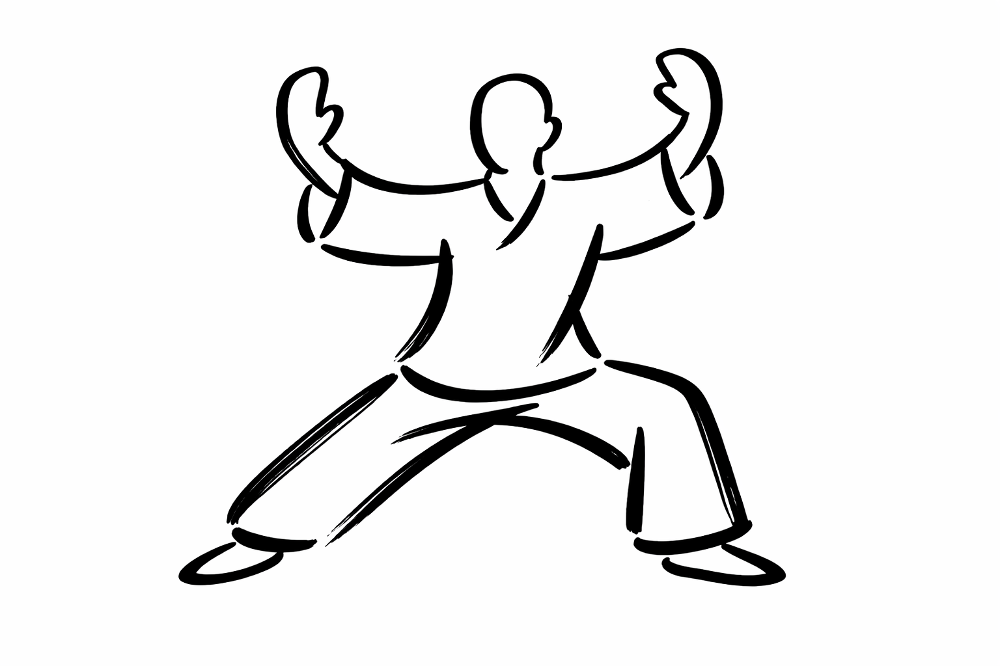
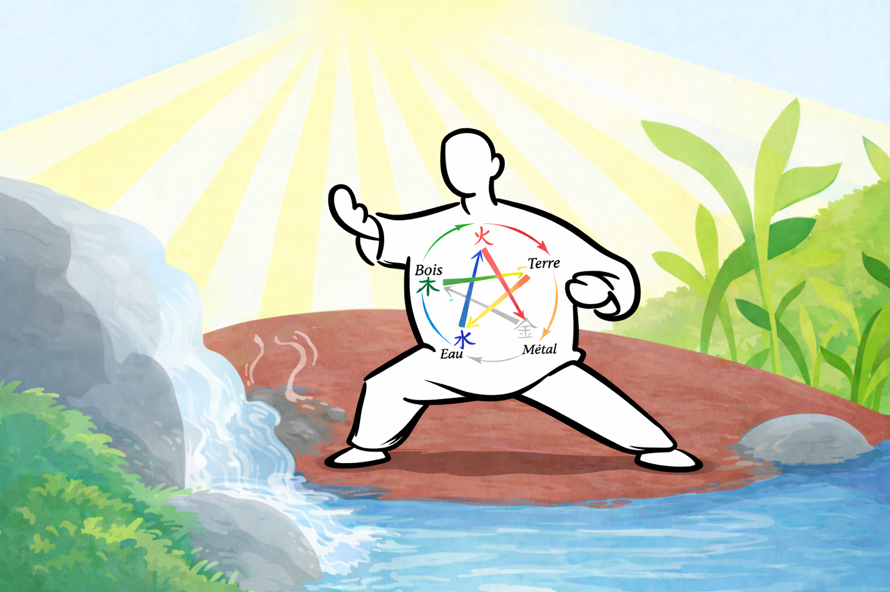
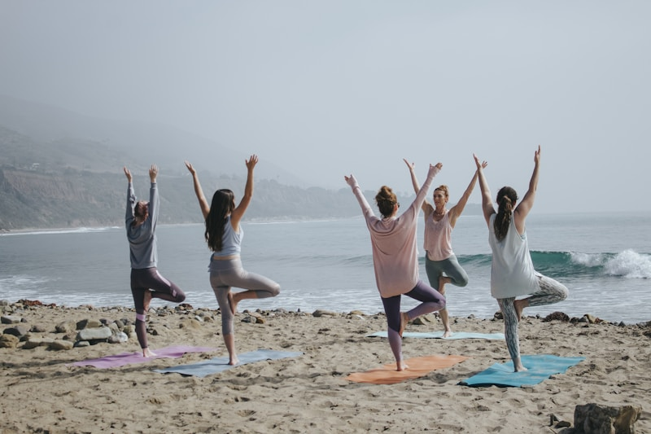

AOUEN
Arts Internes Chinois
Aouen ou l'Awen en breton, double évocation de la muse et du souffle. C'est aussi le Qi pour les chinois et le Ki pour les japonais.

Notre Histoire
Aouen est née en 1988 de la volonté d'un petit groupe de promouvoir la pratique de l'aïkido à Perros-Guirec.
Aouen s'est enrichi en 2024 de la pratique du Qi Gong et en 2026 du Tai chi chuan : deux arts internes chinois.

Les Arts Internes Chinois
Les arts internes chinois offrent une voie pour retrouver la vitalité et la fluidité des mouvements du corps et de l'esprit.
Majoritairement d'origine taoïste, ils nous amènent à utiliser notre Intention (le Yi) et notre Énergie (le Qi).
Ils peuvent être considérés comme des méditations en mouvement.
Nos disciplines
Aïkido
L'aïkido est un art martial japonais, fondé par Morihei Ueshiba. Il se compose de techniques avec armes et à mains nues utilisant la force de l'adversaire.
En savoir plusQi Gong
Le Qi Gong est une gymnastique traditionnelle chinoise et une science de la respiration fondée sur la maîtrise de l'énergie vitale.
En savoir plus
太極拳Tai Chi Chuan
Le Tai chi chuan est un art martial chinois interne visant à renforcer et assouplir l'ensemble du corps.
En savoir plusNos Cours
Qi Gong
Horaire : 16h15 à 17h30
Tarif : 150€ à l'année
Lieu : Maison des loisirs de la rade, 3 Rue Pierre Loti, 22700 Perros-Guirec
En savoir plusTai Chi Chuan
Horaire : 18h à 19h
Tarif : 150€ à l'année
Lieu : Maison des loisirs de la Rade, 3 Rue Pierre Loti, 22700 Perros-Guirec
En savoir plusTai Chi Chuan + Tui Shou
Horaire : 18h à 19h (Tai Chi Chuan), 19h à 19h30 (Tui Shou)
Tarif : 180€ à l'année
Lieu : Maison des loisirs de la Rade, 3 Rue Pierre Loti, 22700 Perros-Guirec
En savoir plusPremier cours d'essai gratuit
À Propos de Nos Cours
- Groupes limités à 10 personnes maximum pour un accompagnement personnalisé
- Premier cours d'essai gratuit sans engagement
- Tous niveaux acceptés : des débutants aux pratiquants avancés
- Enseignement en français avec une approche accessible et pragmatique
- Matériel minimal requis : vêtements confortables et chaussures souples